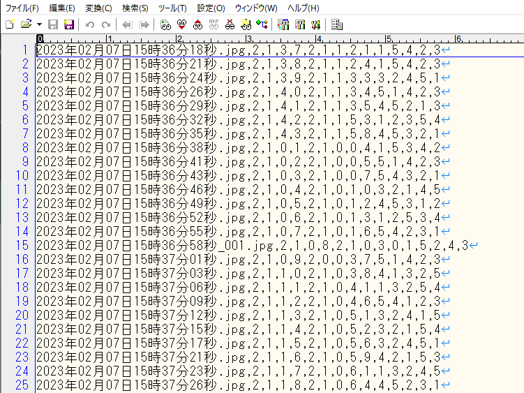
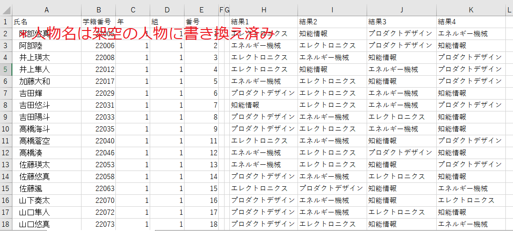
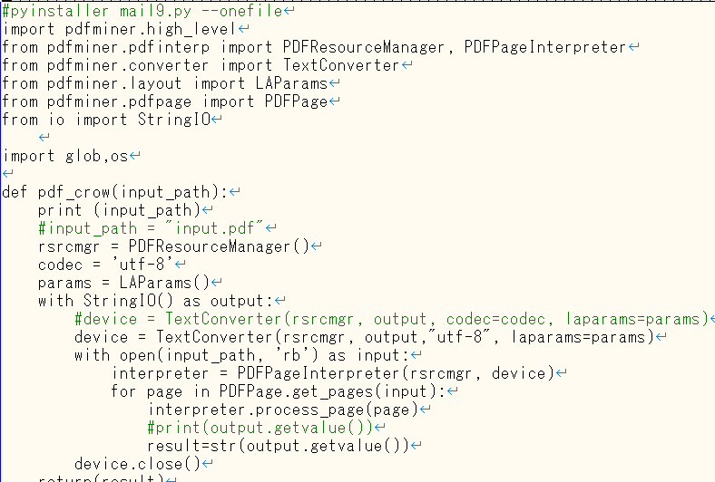
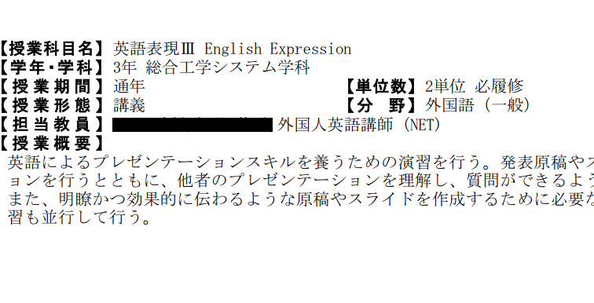
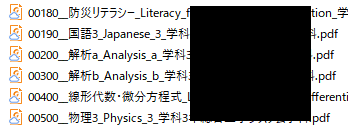

・学生氏名匿名化アプリの作成
2023年4月 teams移行による学生情報記載のルールの厳重化が行われた。学生氏名等の個人情報記述する際には暗号化が求められたが、その解読・復元には大きな負担が伴っていた(特に保健室)。本ツールはそのような状況を打開すべく開発されたツールであり、暗号化された氏名を入力すると復号された名前が表示される。保健室・学生相談室等で利用実績あり。

扱えるプログラミング言語:python,java script(GAS),c#,C(Arduino like),html
2023年4月 teams移行による学生情報記載のルールの厳重化が行われた。学生氏名等の個人情報記述する際には暗号化が求められたが、その解読・復元には大きな負担が伴っていた(特に保健室)。本ツールはそのような状況を打開すべく開発されたツールであり、暗号化された氏名を入力すると復号された名前が表示される。保健室・学生相談室等で利用実績あり。
「基礎工学演習」「コース選択」「1年生芸術科目」等の選択科目を決定するために、学生はマークシートへの記入行っている。そのマークシートの出力データは、1,1,2,2,3,5,4,3,2,1のような人間の目では非常に分かりずらいデータ形式をしている。そこでより見やすい形式にしてくれるのが本ツールの役目である。このツールにより、学生太郎,国語,算数,理科,社会,道徳のような人の目で見やすい形式のデータが得られる
CUIプログラム(ウィンドウが出ないプログラム)なので、ソースコードの一部を載せている
  通常pdfファイルは、見た目と内部のデータ構造が大きく食い違っており、データ取得が難しいとされている。私は締め切りが短いシラバス編纂業務についてプログラムによるミスの低減を目的とし、シラバスpdfファイルへの自動での、名前付けプログラムを作成し、それによるシラバス編纂業務の高速化、ミスの低減を狙っている。
CUIプログラム(ウィンドウが出ないプログラム)なので、読み込むpdfの一部を載せている
 